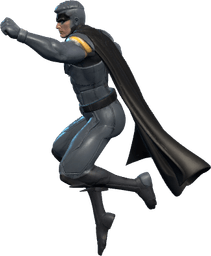
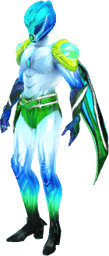

Momentum
Adrenaline
0
0
0 m · 0 hits
BEST 0
x0
COMBO
LOW MOMENTUM — SMASH SOMETHING!
READY
0 km/h
SURGE READY
❚❚
SURGE
0
CITY
BREAKER
SMASH THROUGH NEW YORK
BEST SCORE
0
PLAY
Settings
Skins
Maps
Weave the streets · smash towers · dodge the drones
Settings
×
Sound
ON
Night Mode
OFF
Gyro Aim
(tilt to steer)
OFF
Move Sensitivity
1.0×
Gyro Sensitivity
1.0×
Villains
×
Choose your villain — tap to switch who you fly.

Dominus
Selected

Frutiger
Tap to play
Warden
1500 c
Phantom
2500 c
Onyx
4000 c
Aureus
7500 c
Maps
×
Choose your world — each plays & sounds different.
New York
Selected
Frutiger Aero
Tap to play
Medieval
Tap to play
Frutiger Metro
Tap to play
Miami
Soon
Mars
Soon
YOU FELL
Fly Again
Share Score
Main Menu
PAUSED
Resume
Main Menu
CITY
BREAKER
FORGING
DESTRUCTION
·
0
%